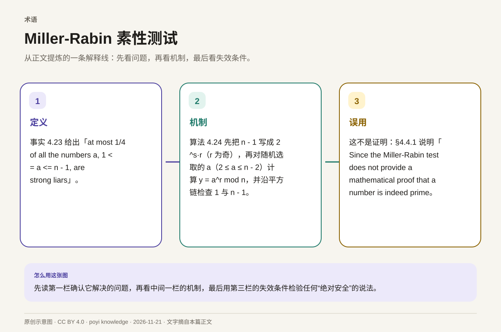

原理与机制
术语：Miller-Rabin 素性测试（Miller-Rabin）。HAC 把 Miller-Rabin 检验称为「the strong pseudoprime test」。算法 4.24 先把 n - 1 写成 2^s·r（r 为奇），再对随机选取的 a（2 ≤ a ≤ n - 2）计算 y = a^r mod n，并沿平方链检查 1 与 n - 1。按定义 4.21，使合数通过的 a 称为「a strong liar (to primality) for n」。

为什么重要
事实 4.23 给出「at most 1/4 of all the numbers a, 1 <= a <= n - 1, are strong liars」，因此事实 4.25 说明 t 轮独立随机基下 the probability that MILLER-RABIN(n,t) declares n to be 'prime' is less than (1/4)^t。注记 4.26 补充，对大多数合数而言强说谎者数量 is actually much smaller than the upper bound of phi(n)/4。
应用与实例
FIPS 186-5 要求生成 RSA 密钥对的实现使用附录 B.3 的准则与方法，且「Candidate integers shall be tested for primality as specified in Appendix B.3」；B.3 规定「An approved robust probabilistic primality test shall be selected and used」，其中 B.3.1 是 Miller-Rabin、B.3.2 是增强 Miller-Rabin、B.3.3 是（广义）Lucas 概率检验，并说明两检组合「may provide additional assurance」。表 B.1 按候选素数长度给出误差概率（如 2 的负 100、112、128、144 次方）与对应的 Miller-Rabin 轮数，轮数推导写在附录 C.1。
边界与攻击面
这不是证明：§4.4.1 说明「Since the Miller-Rabin test does not provide a mathematical proof that a number is indeed prime, the number n ...is a probable prime」。注记 4.47 从贝叶斯角度提醒P(X|Yt) may be considerably larger than (1/4)^t，事实 4.48 给出如 k = 512、t = 6 时不超过 2 的负 88 次方之类的界，注记 4.49 说通常可接受 2 的负 80 次方量级的误差概率。定义 4.29 与表 4.1 还列出对多个基都是强伪素数的合数（如 2047、1373653）。
历史与背景
在 HAC（1996 年出版）的编排中，Miller-Rabin 强伪素数检验与 Solovay-Strassen、Lucas-Lehmer 等概率或专用检验并列在同一章的公钥参数生成流程里，用于选择模数与素数。FIPS 186-5（2023 年）的附录 B.3 仍把 Miller-Rabin 与增强型 Miller-Rabin 列为批准的素性检验。
逐步示例与核验
定义检查模型
上位概念 → 区别特征 → 正例 → 反例 → 易混边界。正例必须落在外延内；反例必须刚好跨过边界；同义词不能代替定义。
参考出处
- Wikipedia search entry for Miller-Rabin 素性测试. https://zh.wikipedia.org/w/index.php?search=Miller-Rabin%20%E7%B4%A0%E6%80%A7%E6%B5%8B%E8%AF%95
- RFC 4949: Internet Security Glossary, Version 2. https://www.rfc-editor.org/rfc/rfc4949